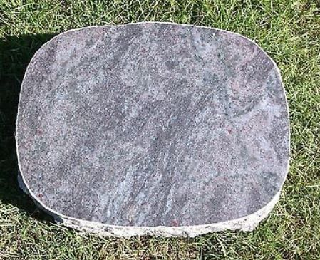

Orion
- Art
- Granit
- Herkunft
- Indien
- Farbe
- Blaugrau mit dunklen Einsprengseln
Ein ruhiger, gleichmäßig gemusterter Granit mit kühlem Blauton. Poliert wirkt er elegant und tief, gestockt oder geflammt hell und natürlich – ideal für klare, gut lesbare Inschriften.